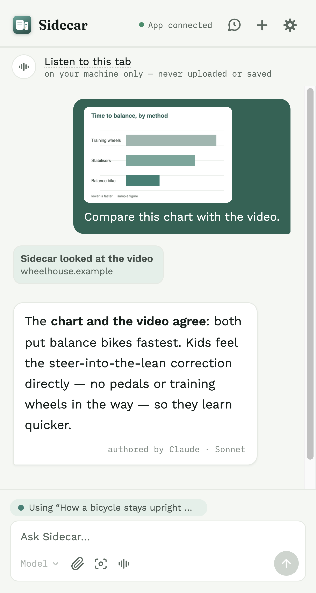
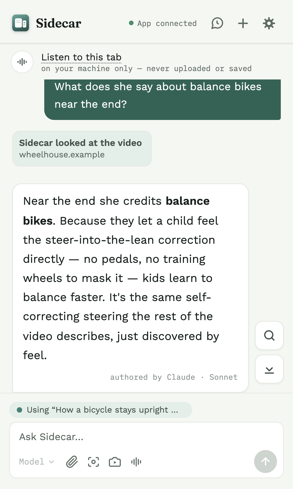
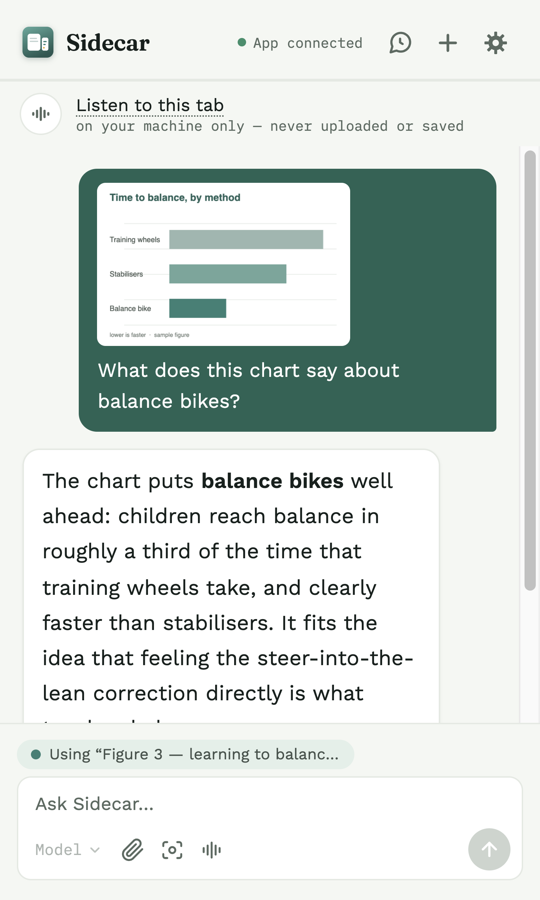
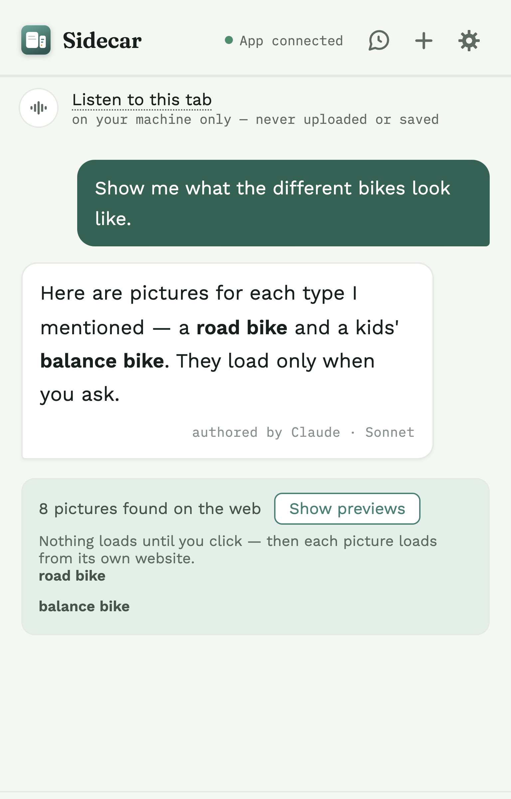
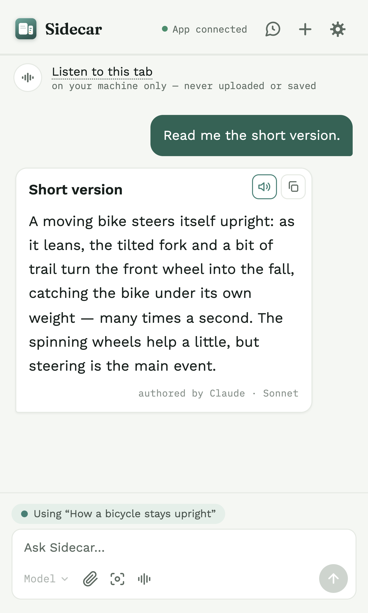
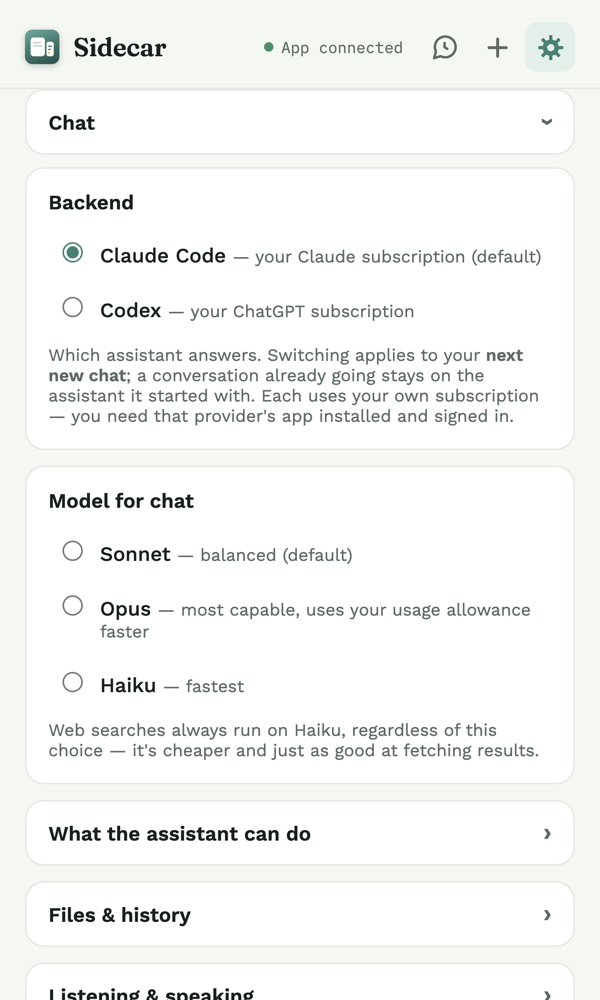

Across pages
One conversation that follows you
A Sidecar conversation isn't tied to a single tab. Start it on one page and keep talking as you move around — switch tabs, follow a link, open something new, and you're still in the same thread.
It picks up each new page the first time you ask about it, so the answer is grounded in whatever you're looking at now — no restarting, no pasting.
- One thread, many pages. The conversation is yours, not the tab's — it stays with you as you browse.
- Fresh context, on demand. Sidecar reads a page only when you ask, and only the page you're on.
- Never in the background. Between questions, it isn't reading anything.
Works on ordinary web pages, not on browser pages like chrome://settings.


Text, images & video
Every kind of content, one thread
Real research isn't only text. In one Sidecar conversation you can ask about an article, drop in a screenshot or a photo, attach a PDF or a text file, then turn to a video — and it all stays in the same thread.
Sidecar carries every kind of content forward together, so a later question can build on the picture you shared a few messages ago or the video you just watched.
- Text & pages — what you're reading, plus quotes you send in.
- Images & documents — screenshots, uploaded pictures, PDFs (their text is read), and text or code files.
- Video & audio — a video's transcript, or what Sidecar hears when you listen.
Each single message carries one attachment — an image, a file, or a quote — while page and video context ride alongside. Across the thread, it's all there.

Video
Ask about what you're watching
Ask about a video while it plays. If the site shows a transcript — on YouTube, click Show transcript — Sidecar reads it. If there's no transcript, turn on Listen and it transcribes the audio with Whisper, right on your Mac.
Either way, answers are about what's actually being said or shown, up to the point you've watched.
- Reads the site's transcript when there is one — nothing to set up.
- Listens when there isn't. Nothing is captured until you press Listen, and it stops when you stop.
- On your computer. Listening uses Whisper on your Mac; Sidecar can fetch the speech model the first time.
The audio stays on your Mac; when you ask, the video's transcript text goes to your assistant, the same as page text. Listening is optional and off until you ask for it.

On screen
Show it anything you can see
When text alone can't describe it — a chart, a diagram, a photo, a page's layout — show Sidecar the screen. Screenshot the visible area or the whole page, crop a region, or attach an image.
You can also attach a PDF or a text/code file. Sidecar reads a PDF's text and sends that, not a photo of the pages.
- Capture the visible area, the whole page (scrolled a screenful at a time), or a crop.
- Attach an image, a PDF, or a text or code file from your computer.
- Quick access from the send bar's camera and paperclip — or a right-click.
A captured picture is kept in the chat only if you turn on "save the pictures" (off by default).

Highlight to ask
Select text, ask about it
Reading something and want to ask about just one line? Select text on any page and a small Ask in Sidecar button appears next to your cursor. One click sends the selection into the panel.
It's off by default, so it never gets in your way until you want it — and nothing leaves the page until you click.
- Select, then click the pill to send the exact text you highlighted.
- Off by default. Turn it on in Settings, or from the right-click menu.
- Toggle in place. Right-click a selection to switch it off; right-click a blank spot to switch it back on.

Answers with sources
Web-backed, and shows its work
When a question needs current information, your assistant looks it up on its own — there's no search button to press.
The answer lists the reference links it drew on, under Sources, so you can open them yourself. Copy the answer and the links come along.
- Automatic. Sidecar decides when a question needs the web.
- Sources you can open are listed under the answer.
- Copy keeps them. Copying an answer includes its source links.
A web search goes out through your subscription, like your chat — one of the moments Sidecar reaches the internet.

Pictures from the web
See it, not just read about it
Ask to see what something looks like and Sidecar searches the web for pictures of it — grouped by subject when you ask about several things at once.
True to the rest of Sidecar, it's privacy-gated: nothing loads until you click Show previews, and then each picture loads straight from its own website.
- Finds pictures of what you asked about, grouped by subject.
- Click to load. Previews stay withheld until you choose to see them.
- Off by default. Turn on "show pictures from the web" in Settings.
Loading previews opens web pages to find images, and each thumbnail loads from the site it lives on.

Find & reopen
Every past chat, one search away
Every conversation is saved (unless you turn saving off), so nothing you asked is lost. The bubble-with-clock button opens a searchable list, split into About this page and All conversations.
Search across all of them by title, the pages they were about, or anything said in them — then pick one back up right where you are, even on a page you never chatted about.
- Search everything — titles, the pages, and the words inside.
- Resume anywhere — reopen a thread on the tab you're on now.
- All on your Mac. The search never leaves your computer.
Started a new chat by accident? A banner takes you back to the one you left.

Read aloud
Hear an answer instead of reading it
Every answer has a speaker button. Click it and Sidecar reads the answer aloud with a voice already on your Mac.
Want something warmer? Settings can download an optional, natural offline voice (English for now) — and it still runs entirely on your computer.
- One click on any answer to hear it.
- Built-in or natural. Use your Mac's voice, or download a natural one.
- Never online. Reading aloud stays on your computer; Sidecar skips the online voices some browsers offer.
Pick the natural voice before downloading it and Sidecar tells you and stops, rather than falling back to an online voice.

Your choice of AI
The agent you already pay for
Sidecar runs on the AI you already use. Choose Claude Code (your Claude subscription) or Codex (your ChatGPT subscription) in Settings — you only need one.
Then pick the model for each message: Sonnet, Opus, or Haiku for Claude, or whichever models your Codex account offers.
- Your subscription — no extra account, no separate bill, no API key.
- Pick per message — the model button in the send bar switches models.
- More to come. Built on a real backend abstraction, designed to support more agents over time.
